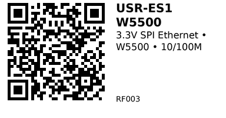

USR-ES1 W5500 Ethernet Network Module - RF003¶
The USR-ES1 is a compact SPI-to-Ethernet module based on the Wiznet W5500 hardwired TCP/IP controller.
It gives any 3.3 V microcontroller (like the ESP32) a reliable wired 10/100 Mbps Ethernet connection without you having to implement the TCP/IP stack yourself.
Use it when you want a stable, low‑jitter network link (MQTT, HTTP, APIs, etc.) and Wi‑Fi is weak, noisy, or not allowed.
Links¶
- Where to buy: AliExpress
- Datasheet / Manual (USR-ES1): PDF
- W5500 Chip Datasheet: PDF
- Tutorial (ESP32 + W5500 example): ESP32 + W5500 — Simple Working Example
Specifications¶
From the USR-ES1 manual / AliExpress description:
- Interface: SPI (Mode 0 or 3), up to 80 MHz
- Protocol stack: Hardware TCP/IP
- Supports TCP, UDP, ICMP, IPv4, ARP, IGMP, PPPoE
- Sockets: up to 8 simultaneous sockets
- Buffer: 32 KB internal RAM for RX/TX
- Ethernet PHY: 10BaseT / 100BaseTX, auto‑negotiation (full/half duplex)
- Supply voltage: 3.3 V (external), ≥ 200 mA available, stable
- Logic levels: 3.3 V TTL SPI (designed for direct 3.3 V MCU connection)
- Status LEDs: link, activity, speed, duplex
- Power & size:
- PCB size: 23 × 25 mm
- Mechanical dimensions: 28.5 × 23 × 24 mm
Pinout & Addresses (common breakout labels)¶
The module exposes two 1×6 headers (often shown as “Group 1” and “Group 2” in the manual):
Group 1 (SPI + INT):
- GND – Ground
- GND – Ground
- MOSI – SPI Master Out, Slave In (MCU → W5500)
- SCLK – SPI clock from MCU
- SCSn (CS) – Chip Select (active low)
- INTn – Interrupt output (active low, optional)
Group 2 (Power, reset, MISO):
- GND – Ground
- 3V3 – 3.3 V supply
- 3V3 – 3.3 V supply (second pin, paralleled)
- NC – Not connected
- RSTn – Reset input (active low)
- MISO – SPI Master In, Slave Out (W5500 → MCU)
There is no configurable I²C address or similar – everything is controlled over SPI.
Wiring¶
Typical connection to an ESP32 dev board (Arduino‑core, SPI via VSPI):
- USR-ES1 → ESP32
- 3V3 → 3V3 (make sure your 3.3 V rail can supply at least 200 mA)
- GND → GND
- MOSI → GPIO 23 (VSPI MOSI)
- MISO → GPIO 19 (VSPI MISO)
- SCLK → GPIO 18 (VSPI SCK)
- SCSn (CS) → GPIO 5 (you can choose a different free GPIO)
- RSTn → GPIO 4 (or tie to EN via a transistor / manual reset circuit)
- INTn → GPIO 15 (optional – can be left unconnected if you don’t use interrupts)
Notes:
- Keep the Ethernet magnetics/RJ45 properly connected (most USR-ES1 boards come with an integrated magjack).
- Use short SPI wiring where possible, or slow down the SPI clock if you see instability.
Gotchas¶
- 3.3 V only: the module must be powered at 3.3 V. Feeding it 5 V on VCC will very likely kill it.
- Current headroom: budget at least 200 mA on the 3.3 V rail (especially important if your ESP32 is also running Wi‑Fi).
- SPI pins: you can remap CS/INT/RESET to other GPIOs, but you must update your code accordingly.
- Shared SPI bus: if you share SPI with other devices (e.g. display, SD card), ensure each device has its own CS line and that only one CS is low at a time.
- Network config: many examples use static IP; if you use DHCP, check your router and library support.
How to use¶
Below is a minimal example to bring up the USR-ES1 on an ESP32 using the Ethernet library and print its IP address.
Required libraries¶
- Ethernet (by Arduino, supports W5500)
Install from Arduino IDE: Sketch → Include Library → Manage Libraries… then search for “Ethernet”. - SPI (comes with Arduino core)
Example code (ESP32 + USR-ES1, basic test)¶
#include <SPI.h>
#include <Ethernet.h>
// SPI pin mapping for ESP32 (VSPI)
static const int PIN_MOSI = 23;
static const int PIN_MISO = 19;
static const int PIN_SCK = 18;
static const int PIN_CS = 5; // W5500 CS (SCSn)
static const int PIN_RST = 4; // Optional: W5500 reset
// INTn can be wired to a GPIO if you want interrupts
// Any locally-unique MAC address (change to avoid conflicts on your LAN)
byte mac[] = { 0xDE, 0xAD, 0xBE, 0xEF, 0xFE, 0xED };
// Optional: static IP (adjust to your network)
// Comment these three lines to use DHCP instead.
IPAddress ip(192, 168, 1, 50);
IPAddress dns(192, 168, 1, 1);
IPAddress gateway(192, 168, 1, 1);
IPAddress subnet(255, 255, 255, 0);
void setup() {
Serial.begin(115200);
while (!Serial) {
; // wait for serial
}
Serial.println();
Serial.println(F("USR-ES1 (W5500) Ethernet test"));
// Configure SPI pins (ESP32)
SPI.begin(PIN_SCK, PIN_MISO, PIN_MOSI, PIN_CS);
// Optional hardware reset pulse
pinMode(PIN_RST, OUTPUT);
digitalWrite(PIN_RST, LOW);
delay(10);
digitalWrite(PIN_RST, HIGH);
delay(200); // allow W5500 to boot
// Tell Ethernet library which CS pin to use
Ethernet.init(PIN_CS);
// Start Ethernet with static IP
Serial.println(F("Bringing up Ethernet with static IP..."));
Ethernet.begin(mac, ip, dns, gateway, subnet);
// If you prefer DHCP instead, use:
// Serial.println(F("Bringing up Ethernet with DHCP..."));
// if (Ethernet.begin(mac) == 0) {
// Serial.println(F("Failed to configure Ethernet using DHCP"));
// }
delay(1000);
Serial.print(F("Local IP: "));
Serial.println(Ethernet.localIP());
}
void loop() {
// Simple heartbeat
static unsigned long lastPrint = 0;
if (millis() - lastPrint > 5000) {
lastPrint = millis();
Serial.print(F("Ethernet link status: "));
EthernetLinkStatus link = Ethernet.linkStatus();
if (link == LinkON) Serial.println(F("ON"));
else if (link == LinkOFF) Serial.println(F("OFF"));
else Serial.println(F("UNKNOWN"));
}
}
This sketch should:
- Initialize SPI on the ESP32.
- Reset the W5500 via RSTn.
- Configure the Ethernet library to use your chosen CS pin.
- Bring up the interface with a static IP (or DHCP, if you uncomment that section).
- Print the local IP address and periodically report link status.
Once this works, you can reuse the same library (and wiring) for HTTP clients/servers, MQTT clients, etc.
QR for printing will appear here after you run the script:
